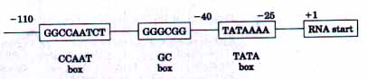
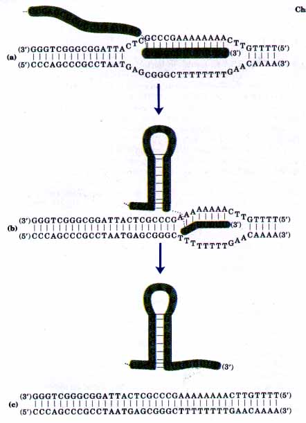
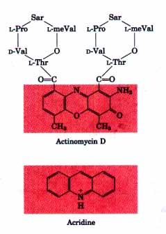
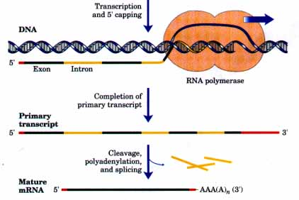
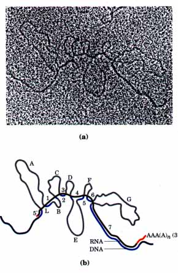
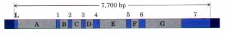
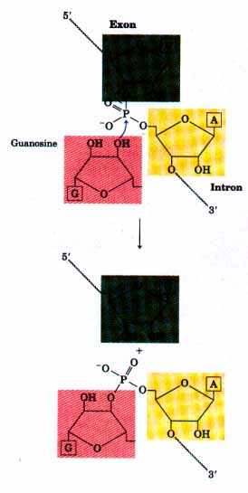
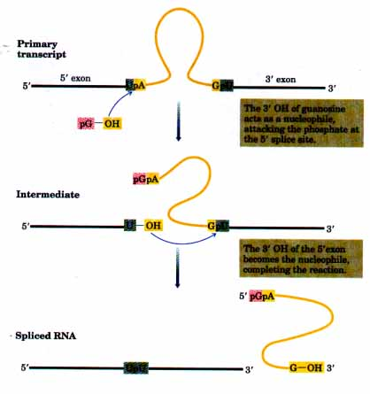
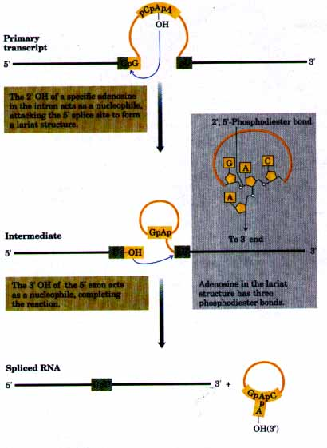
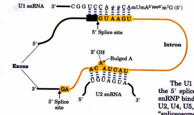

Under certain conditions and at different developmental stages, the cellular requirements for any given gene product may very greatly. To provide proteins to the cell in the proportions needed, the transcription of each gene is carefully regulated. The variation in affmity of RNA polymerase for promoters due to differences in promoter sequences, as discussed above, is only one level of control. A variety of proteins bind to sequences in and around the promoter and either activate transcription by facilitating RNA polymerase binding or repress transcription by blocking the activity of polymerase. In E. coli, an example of a protein that activates transcription is the catabolite gene activator protein (CAP), which increases the transcription of genes coding for enzymes that metabolize sugars other than glucose when cells are grown in the absence of glucose. Repressors, typified by the Lac repressor, are proteins that block the synthesis of RNA at specific genes. In the case of the Lac repressor, RNA synthesis is blocked at the genes for enzymes involved in lactose metabolism when lactose is unavailable. Because transcription is the first step in a complicated and energy-intensive pathway leading to protein synthesis, much of the regulation of protein levels in both bacterial and eukaryotic cells is directed at transcription initiation. In Chapter 27 we will describe many mechanisms by which this is accomplished.
The transcriptional machinery in the nucleus of a eukaryotic cell is much more complex than that in bacteria. Eukaryotes have three dif ferent RNA polymerases, designated I, II, and III. Each has a specific function and binds to a different promoter sequence. RNA polymerase I (Pol I) is responsible for the synthesis of only one type of RNA, apreribosomal RNA transcript that contains the precursor for the 18S, 5.8S, and 28S rRNAs (see Fig. 26-12). Its promoter varies greatly in sequence from one species to another. RNA polymerase II (Pol II) has the central function of synthesizing mRNAs, as well as some specialfunction RNAs. This enzyme must recognize thousands of promoters, many of which share some key sequence similarities in most eukaryotes (Fig. 25-7).
| These sequences are generally binding sites for proteins called transcription factors, which modulate the binding of RNA polymerase to the promoter. RNA polymerase III (Pol III) makes tRNAs, the 5S rRNA, and some other small specialized RNAs. The promoter recognized by RNA polymerase III is well characterized. Interestingly, some of the sequences required for the regulated initiation of transcription by RNA polymerase III are located within the gene itself, whereas others are found in more conventional locations before the RNA start site (Chapter 27). |  Figure 25-7 The consensus sequences of some common elements in promoters used by eukaryotic RNA polymerase II, derived from a comparison of 100 promoters of this type. A transcription factor (TFIID) binds at the A=T-rich sequence called a TATA box, facilitating the binding of the polymerase. This sequence is commonly found about 25 base pairs before the RNA start site. Two other elements are also sometimes present, found somewhere between -110 and -40: the CCAAT box and GC box are binding sites for other transcription factors that afiect polymerase function. Other sequences, some quite distant in the DNA, can affect transcription (Chapter 27). Eukaryotic promoters are more variable than their bacterial counterparts, and some RNA polymerase II promoters lack all of the sequences shown. As in Fig. 25-5, the sequences are those in the coding (nontemplate) strand. |
RNA synthesis proceeds until the RNA polymerase encounters a sequence that triggers its dissociation. This process is not well understood in eukaryotes, and our focus again shifts to bacteria. In E. coli there are at least two classes of such termination signals or terminators. One class relies on a protein factor called ρ (rho), and the other is ρ-independent.
The ρ-independent class has two distinguishing features (Fig. 25-8). The first is a region that is transcribed into self complementary sequences, permitting the formation of a hairpin structure (see Fig. 12-21) centered 15 to 20 nucleotides before the end of the RNA. The second feature is a run of adenylates in the template strand that are transcribed into uridylates at the end of the RNA. It is thought that formation of the hairpin disrupts part of the RNA-DNA hybrid in the transcription complex. The remaining hybrid duplex (oligoribo-U-oligodeoxy-A) contains a particularly unstable combination of bases, and the entire complex simply dissociates.
The ρ-dependent terminators lack the sequence of repeated adenylates in the template but do usually have a short sequence that is transcribed to form a hairpin. RNA polymerase pauses at these sequences, and dissociates if ρ protein is present. The ρ protein has an ATP-dependent RNA-DNA helicase activity and probably disrupts the RNA-DNA hybrid formed during transcription. ATP is hydrolyzed by ρ protein during the termination process, but the detailed mechanism by which the protein acts is not known.
 Figure 25-8 A model for ρ-independent termination of transcription in E. coli. (a) The poly(U) region is synthesized by RNA polymerase. (b) Intramolecular pairing of complementary sequences in the RNA forms a hairpin, destroying part of the RNA-DNA hybrid. The remaining A=U hybrid region is relatively unstable, and (c) the RNA dissociates completely. |
 Figure 25-9 Structure of actinomycin D and acridine, inhibitors of DNA transcription. The shaded portion of actinomycin D is planar and intercalates between two successive G=C base pairs in duplex DNA. The two cyclic peptide structures of the actinomycin D molecule bind to the minor groove of the double helix. Sarcosine tSar) is N-methylglycine; meVal represents methylvaline. The linkages between sarcosine, L-proline, and D-valine are peptide bonds. Acridine also acts by intercalation in the DNA. |
The elongation of RNA chains by RNA polymerase in both bacteria and eukaryotes is specifically inhibited by the antibiotic actinomycin D (Fig. 25-9). The planar portion of this molecule intercalates (insertsitself) into the double-helical DNA between successive G=C base pairs, deforming the DNA. This local alteration prevents the movement of the polymerase along the template. In effect, actinomycin D jams the zipper. Because actinomycin D inhibits RNA elongation in intact cells, as well as in cell extracts, it has become very useful for identifying cell processes that depend upon RNA synthesis. Acridine inhibits RNA synthesis in a similar fashion (Fig. 25-9).
Rifampicin is an antibiotic inhibitor of RNA synthesis that binds specifically to the β subunit of bacterial RNA polymerases (see Fig. 25-4), preventing the initiation of transcription. A specific inhibitor of RNA synthesis in animal cells is α-amanitin, a toxic component of the poisonous mushroom Amanita phalloides. It blocks mRNA synthesis by RNA polymerase II and, at higher concentrations, by RNA polymerase III. It does not affect RNA synthesis in bacteria. This mushroom has developed a very effective defense mechanism: a substance that inhibits mRNA formation in organisms that might try to eat it but is evidently harmless to the mushroom's own transcription mechanism.
Many of the RNA molecules in bacteria and virtually all of the RNA molecules in eukaryotes are processed to some degree after they are synthesized. Many of the most interesting molecular events in RNA metabolism are to be found among these postsynthetic reactions. The study of these processes has revealed that some of them are catalyzed by enzymes made up of RNA rather than protein. The discovery of catalytic RNAs has brought on a revolution in thinking about RNA function and about the origin of life.
A newly synthesized RNA molecule is called a primary transcript. Perhaps the most extensive processing of primary transcripts occurs in eukaryotic mRNAs and in tRNAs of both bacteria and eukaryotes. A primary transcript for a eukaryotic mRNA typically contains sequences encompassing one gene. The sequences encoding the polypeptide, however, usually are not contiguous. Instead, in the majority of cases, the coding sequence is interrupted by noncoding tracts called introns; the coding segments are called exons (see the discussion of introns and exons in DNA, p. 798). In a process called splicing, the introns are removed from the primary transcript and the exons joined to form a contiguous sequence specifying a functional polypeptide. Eukaryotic mRNAs are also modified at each end. A structure called a cap is added at the 5' end, and a polymer containing 20 to 250 adenylate residues, poly(A), is added to the 3' end. These processes are outlined in Figure 25-10 and described in more detail below.
The primary transcripts of most tRNAs (in all organisms) are also processed by the removal of sequences from each end (called cleavage) and sometimes by the removal of introns (splicing). Many bases in tRNAs are also modified; mature tRNAs are replete with unusual bases not found in other nucleic acids.
The ultimate postsynthetic modification reaction is the complete degradation of the RNA. All RNAs eventually meet this fate and are replaced with newly synthesized RNAs. The rate of turnover of RNAs is critical to determining their steady-state level and the rate at which cells can shut down expression of a gene whose product is no longer needed.
| Figure 25-10 Formation of the primary transcript and its processing during maturation of the mRNA in a eukaryotic cell. The 5' cap (in red) is added before synthesis of the primary transcript is complete. Noncoding sequences following the last exon are shown in orange. Splicing may occur either before or after the cleavage and polyadenylation steps. All of the processes represented here take place within the nucleus. |  |
| In bacteria, a polypeptide chain is
generally encoded by a DNA sequence that is colinear with
the amino acid sequence, continuing along the DNA
template without interruption until the information
needed to specify the polypeptide is complete. The notion
that all genes are continuous was unexpectedly disproven
in 1977 with the discovery that the genes for
polypeptides in eukaryotes are often interrupted by the
noncoding sequences now called introns. Introns are
present in the vast majority of genes in vertebrates;
among the few exceptions are the genes that encode
certain histones. The occurrence of introns in other
eukaryotes is variable. Most genes in the yeast
Saccharomyces cereuisiae lack introns, although introns
are more prevalent in the genes of some other yeast
species. Introns are also found in a few prokaryotic
genes. Introns are spliced from the primary transcript, and exons are joined to form a mature, functional RNA. Introns were discovered when mRNA and the DNA from which it was derived were compared using methods such as that illustrated in Figure 25-11. If the DNA containing a gene is completely denatured and then renatured in the presence of the mature RNA derived from the gene, an RNA-DNA hybrid is formed. This kind of experiment revealed DNA sequences that were not present in the RNA and therefore were looped out as in Figure 25-11. Experiments using this and other methods have shown the presence of multiple introns in many genes, with some genes interrupted by introns more than 40 times. In eukaryotic mRNAs most exons are less than 1,000 nucleotides long, with many clustered in the 100 to 200 nucleotide size range. Most exons therefore encode polypeptide chains that are 30 to 50 amino acids long. Introns are much more variable in size (50 to 20,000 nucleotides). Genes of higher eukaryotes, including humans, typically have much more DNA devoted to introns than to exons; it is not uncommon to fmd genes that are 50,000 to 200,000 nucleotides long and that contain numerous introns. |
  Figure 25-11 Defining the structure of the chicken ovalbumin gene by hybridization. Mature mRNA was hybridized to denatured DNA containing the ovalbumin gene, and the resulting molecules were visualized with the electron microscope. Some regions of the DNA have no complement in the mRNA because of splicing of the primary transcript. The resulting single-stranded DNA loops are evident in the electron micrograph (a). The loopsdefine the locations and sizes of introns. The introns are labeled A to G and the seven exons are numbered in the interpretive drawing (b). The poly(A) tail defines the 3' end of the mRNA. The L sequence encodes a signal sequence that targets the protein for export from the cell. (c) A linear representation of the ovalbumin gene showing introns and exons. |
There are four classes of introns. The first two, called group I and group II, share some key characteristics but differ in the details of their splicing mechanisms. Group I introns are found in some nuclear, mitochondrial, and chloroplast genes coding for rRNAs; group II introns are generally found in the primary transcripts of mitochondrial or chloroplast mRNAs. Both groups share the property that no highenergy cofactors (such as ATP) are required for splicing. Both splicingmechanisms involve two transesteriiication reaction steps (Fig. 25-12). A 2'- or 3'-hydroxyl group of a ribose makes a nucleophilic attack on a phosphorus, and in each step a new phosphodiester bond is formed at the expense of the old, maintaining an energy balance. Note that these reactions are very similar to the DNA breaking and rejoining reactions promoted by topoisomerases (Chapter 23) and sitespecific recombinases (Chapter 24).
The group I splicing reaction requires a guanine nucleoside or nucleotide cofactor. This cofactor is not used as a source of energy; instead, the 3'-hydroxyl group of guanosine is used as a nucleophile in the first step of the splicing pathway. The guanosine 3'-hydroxyl forms a normal 3',5'-phosphodiester bond with the 5' end of the intron (Fig. 25-13). The 3'-hydroxyl of the exon that is displaced in this step then acts as a nucleophile in a similar reaction at the 3' end of the intron. The result is precise excision of the intron and ligation of the exons. In group II introns the pattern is similar except for the nucleophile in the first step. Instead of an external cofactor, the nucleophile is the 2'-hydroxyl group of an adenylate residue within the intron (Fig. 25-14). An unusual branched lariat structure is formed as an intermediate. Attempts to identify the enzymes that promote splicing of group I and group II introns produced a major surprise; many of these introns are self splicing-no protein enzymes are involved. This was first revealed in studies of the splicing mechanism of the group I rRNA intron from the ciliated protozoan Tetrahymena thermophila by Thomas Cech and colleagues in 1982. These workers proved that no proteins were involved by transcribing Tetrahymena DNA (including the intron) in vitro using bacterial RNA polymerase. The resulting RNA spliced itself accurately even though it had never been in contact with any enzymes from Tetrahymena. The realization that RNAs, as well as proteins, could have catalytic functions was a milestone in thinking about biological systems. RNA catalysts are discussed in more detail later in this chapter. |
 Figure 25-12 A transesterification reaction. This is the first step in the splicing of group I introns. Here, the 3' OH of a guanosine molecule acts as nucleophile. |
 |
Figure 25-13 Splicing mechanism of group I introns. The nucleophile in the first step may be guanosine, GMP, GDP, or GTP. |
The third and largest group of introns, found in nuclear mRNA primary transcripts, undergo splicing by the same lariat-formation mechanism as the group II introns. However, they are not self splicing. Splicing requires the action of specialized RNA-protein complexes containing a class of eukaryotic RNAs called small nuclear RNAs (snR.NAs). Five snRNAs, Ul, U2, U4, U5, and U6, are involved in splicing reactions. They are found in abundance in the nuclei of many eukaryotes, range in size from 106 (U6) to 189 (U2) nucleotides, and are complexed with proteins to form particles called small nuclear ribonucleoproteins (snRNPs, often referred to as "snurps"). The RNAs and proteins in snRNPs are highly conserved among vertebrates and insects. Small nuclear RNAs similar to these are also found in yeast and slime molds. |
 Figure 25-14 Splicing mechanism of group II introns. The chemistry is similar to that of group I intron splicing, except for the nucleophile in the first step and the novel lariatlike intermediate with one branch having a 2',5'-phosphodiester bond. |
The Ul snRNA has a sequence complementary to sequences near the 5' splice site of nuclear mRNA introns (Fig. 25-15), and the Ul snRNP binds to this region in the primary transcript. Addition of the U2, U4, U5, and U6 snRNPs leads to formation of a complex called the "spliceosome" within which the actual splicing reaction occurs. ATP is required for assembly of the spliceosome, but there is no reason to believe that the splicing reactions require ATP. The fourth class of intron, found in certain tRNAs, is distinguished from the group I and II introns in that its splicing requires ATP. In this case, a splicing endonuclease cleaves the phosphodiester bonds at both ends of the intron, and the two exons are joined as shown in Figure 25-16. The joining reaction is similar to the DNA ligase mechanism (see Fig. 24-15). |
 Figure 25-15 Splicing mechanism in mRNA primary transcripts. The splice sites that mark the intron-exon boundaries of many eukaryotic mRNAs have some conserved sequences. The Ul snRNA has a sequence near its 5' end complementary to the splice site at the 5' end of the intron. Base pairing of Ul to this region of the primary transcript helps define the 5' splice site. ψ represents pseudouridine (see Fig. 25-25), and "m" indicates methylated residues. Base pairing of U2 snRNA to the branch site displaces (bulges) and perhaps activates the adenosine, whose 2' OH forms the lariat structure through a 2',5'-phosphodiester bond. |
Introns are not limited to eukaryotes. Although very rare, several genes with introns have now been found in bacteria and bacterial viruses. Bacteriophage T4, for example, has several genes with group I introns. Introns appear to be more common in archaebacteria (p. 25) than in E. coli.